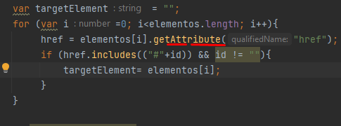
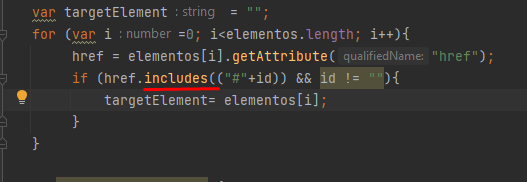
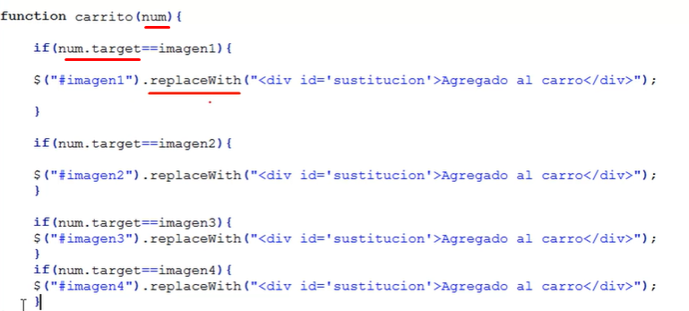
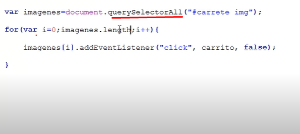
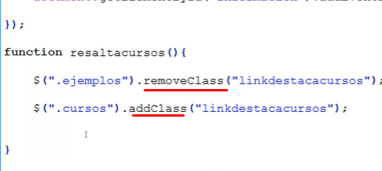
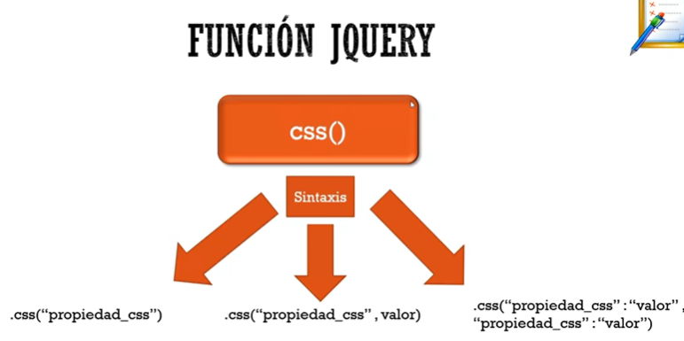
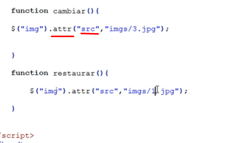

Conceptos Básicos:
Script que se ejecuta directamente en el ordenador, se puede agregar en la pagina con la etiqueta script o en un archivo aparte.

Función Alert:
Función para mostrar un cuadro de confirmación, es de tipo modal lo que bloquea el resto y de la pantalla y detiene el flujo de ejecución.
Enlazar archivo JS:
Falta añadir la etiqueta Script y el atributo src con la ruta de la hoja.
Tipos de datos:
Existen estos tipos de datos.
Nombrar variables:
Reglas básicas para el nombramiento de variables.
Iniciando variables:
Formas de iniciar una variable.
Concatenación de texto:
Para concatenar texto se utiliza el signo "+"
Comentar código:
Se comenta por línea o por bloque.
Función Prompt:
Función de entrada de datos, es modal y detiene la ejecución del código
Operadores de incremento:
Estos son los operadores más utilizados.
Funcion write:
Sirve para ecribir texto dentro de pagina, se escribe en el lugar que fue llamada.
Arreglos:
Se pueden declarar de dos formas con el mismo resultado, y pueden contener objetos de diferentes tipos. Iniciando con el indice '0'
Métodos de arreglos:
Metodos y atributos mas utilizados.

Modificando la propiedad style:
Sirve para modificar atributos de las etiquetas, ej: Se puede modificar y cambiar height dinámicamente en el inicio viene vacía, la propiedad clientHeight es la que se da cuando se cargó por primera vez el elemento. Como ejemplo el aside de esta misma página cambia su altura en forma dinámica dependiendo de la actura de la sección donde estan las imágenes.
Condicional IF:
Uso de condicional.
Operadores Relacionales:
Uso de operadores.
Operadores Lógicos:
Uso de operadores.
Función parseInt:
Se usa para realizar el parseo de un string a un número.
Función isnotnumber:
Se usa validar si una cadena es un número.

Función typeof:
Se usa para realizar el tipo de una variable.

Función getAttribute:
Función JS utilizada para capturar un atributo de un objeto HTML dado su localizador.
Función Includes o contains:
Valida si una cadena contiene otra y devuelve true si es cierto.
Bucle While:
Forma de uso.
Bucle Do While:
Ejecuta el bucle almenos en una ocación.
Clase Math:
Clase con métodos estáticos para realizar operaciones matematicas.
Bucle For:
Bucle definido para iteración.
Funciones:
Modo de uso.
Llamado de Funciones:
Se puede realizar el llamado desde el código HTML o desde el mismo JS.
Pasar y recibir parámetros:
Se pueden pasar parámetros y asignar valores por defecto para que los mismos sean opcionale, para devolver un valor basta con utilizar la palabra return seguido del valor a devolver.
Pasar una función a una variable:
Se puede guardar funciones anónimas en variables para luego ser usadas. Se puede con la palabra function o cambiando esto por el operador lambda, si no lleva parámetros se deja '()', si lleva uno se puede omitir el paréntesis y si lleva más de uno es obligatorio.

Eventos
Qué es un evento:
Cómo construir Eventos
Formas de construir eventos:
Tipos de Eventos
Eventos mas usados:
Fuente del evento:
Se puede pasar a la función Handler del evento el objeto con el evento en si, y utilizando la propiedad target conocer la fuente del evento.
Eventos dentro de la etiqueta:
No es aconsejable y esta obsoleto.
Jquery:
Librería para simplificar el uso Java Script y evitar el problema de compatibilidad entre navegadores.
Enlazar Jquery:
Para usar la librería se debe enlazar con una etiqueta script, esta siempre debe ir despues del la hoja de
estilos ya que en ocaciones el códiog manipula los estilos. Se puede descargar la librería directamente
en el proyecto o, colocar la url de una página que ofrezca el recurso buscandolo en el navedor como
'CDN JQuery'.
La función de document.ready(lambda), ocaciona que el navegador espere hasta que la página este cargada
para ejecutar la función anónima que se pasa como parámetro.
Dom:
El Dom es una representación de objetos con la jerarquía que la interpreta el navegador.
Query Selector All:
Selector java script que devuelve un array con todos los elementos que cumplen la condición de seleccción adminte selectores CSS.
Selectores JQuery:
Los selectores Java Script estan limitados a document.getElement o Elements, Jquuery permite usar todos los selectores CSS, se puede apuntar a clases, id, atributos etc.
Bucles automáticos JQuery:
JQuery provee de bucles automaticos para realizar acciones como el for, que recorren el array de elementos y aplica la acción a cada uno de ellos tan solo con una línea
Funciones encadenadas JQuery:
Es posible encadenar funciones que actuen sobre el mismo objeto
Agregando Elementos JQuery:
Para agregar contenido, JQuery tiene estas funciones:
*.html(): rescata el el contenido que se encuentra en el objeto al que se apunta, si se pasa valor lo reemplaza.
*.append(): agrega contenido dentro del objeto al que apunta al final del contenedor.
*.prepend(): Igual qeu append() pero al inicio del contenedor al que apunta.
*.before(): Agrega contenido por fuera del objeto al que apunta inmediatamente antes.
*.after(): igual que before pero lo agrega inmediatamente después del contenedor al que apunta.
*.text(): Igual que html pero no puede trabajar con etiquetas html las toma como texto.

Eliminando objetos con JQuery:
Elimina el objeto al que se apunta.
Replace Whith JQuery:
Reemplaza un elemento por otro dentro de la página.
Add and Remove class JQuery:
Agrega o elimina la propiedad Class a una etiqueta HTML dado un selector.
CSS function JQuery:
Función que se utiliza para guardar o manipular el estilo css que tenga un elemento. Se puede ajustar los valores por parejas separadas por la coma.
Attr function JQuery:
Función que se utiliza para manipular un atributo de un objeto HTML.
